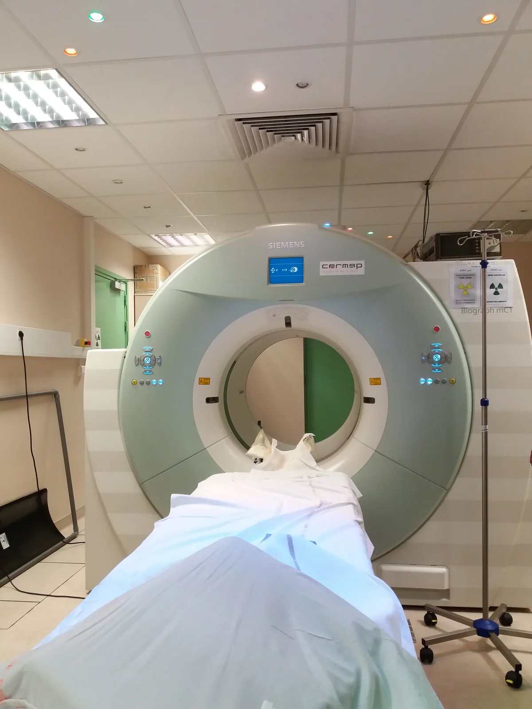
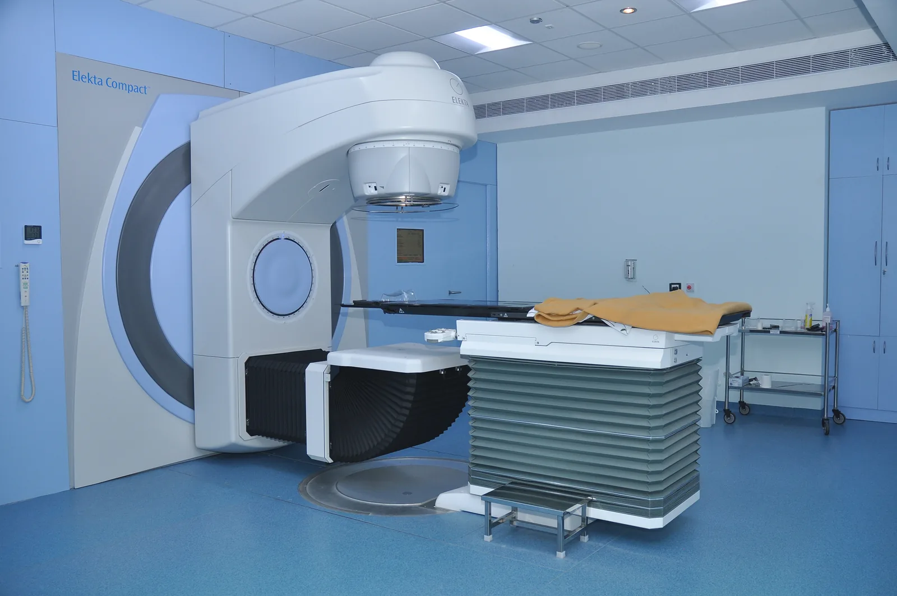

Radiation in medicine and technology
Why is a patient injected with radioactive sugar in a PET scan, and how does the scanner work out where inside the body the radiation came from?
Prior knowledge
- The intensity of gamma radiation halves in every layer of one half-value thickness $d_{1/2}$chapter Ionising radiation and the body
- Activity decreases according to the decay law $A = A_0 \left(\tfrac{1}{2}\right)^{t/T_{1/2}}$chapter The decay law and half-life
- Effective dose in sieverts and protection by time, distance and shieldingchapter Radiation dose and radiation safety in Finland
Core path: follow the steps in order. Besides calculations, the core path includes investigations, explanations and graphs. Tasks marked Optional give extra practice. Optional tasks: 3.
Think about it
In a PET scan at a hospital, a small amount of radioactive sugar is injected into the patient. An hour later the patient lies inside a ring-shaped scanner, and an image appears on the screen in which a cancerous tumour glows brightly. The scanner cannot see inside the body; it only detects photons coming out of it. In another room the same hospital treats cancer with radiation that kills the cells of a tumour but spares the tissue around it.
How can a device outside the body work out where inside the body the radiation came from, and how can radiation destroy a tumour without harming too much healthy tissue?
Optional Review: half-value thickness
Predict
Make your predictions before investigating 3 questions
Prediction 1: what a single detection tells
Prediction 2: how many detections are needed
Prediction 3: radiotherapy from many directions
Investigate
Simulation
How to use
Start collecting collects coincidences, and Stop stops the collection. Coincidences sets the number $N$ of collected coincidences directly between $0$ and $2000$. Patient chooses whether the body has one tumour, two tumours or no tumour; the tumour is not drawn in the body, but it is found in the image. Detection switches between coincidence detection and counting single photons. On the left, two orange photons fly in opposite directions from the annihilation point, the detectors that were hit flash, and a line segment is drawn between them. On the right is the image calculated from the segments: the more segments pass through a pixel, the brighter it is. Speed changes only the pace of the collection.
Assumptions of the model
The tracer is spread evenly through the body, and $25\,\%$ of the annihilations come from the tumour ($20\,\%$ from each of two tumours). The radius of the tumour is about $1\,\text{cm}$, so its tracer concentration is tens of times that of the rest of the body. The photons leave in exactly opposite directions in a random direction in the plane, and the body neither attenuates nor scatters them. The distance travelled by the positron and random coincidences are not included. The ring is two-dimensional and detects every photon pair. The model does not use the difference in the photons' arrival times. A real scanner collects tens of millions of coincidences. The readings are values of the model, not measurements.
How the calculation works
The annihilations are always drawn in the same order, so the same $N$ always gives the same image. A different drawing order would give a different result with small values of $N$, because the random intersections of the segments vary. The image is a grid of $41 \cdot 41$ points with a spacing of $1\,\text{cm}$. Each segment adds one hit to every pixel whose distance from the segment is less than $0.6\,\text{cm}$. The brightest spot is the point with the most hits, and the reading distance from the tumour is its distance from the centre of the nearest tumour. Lines through the tumour is the share of the segments that pass within $1.0\,\text{cm}$ of the centre of the tumour. In the detection of single photons, only one photon of each pair is detected, so only the detector is known and not the segment.
A cross-section of a patient is inside the detector ring of a PET scanner. Collect coincidences and follow how the image on the right is built from the segments and where its brightest spot is.
Experiment 1: how many segments are needed
Test predictions 1 and 2. The patient has one tumour, and the detection is coincidence. Change only the number of coincidences $N$ and record the distance of the brightest spot of the image from the tumour for at least $N = 10$, $20$, $50$ and $200$. At the same time, look at what kinds of segments are drawn in the ring.
Initial state: coincidences $N$ = $0$, patient: one tumour, detection: coincidence. Kept constant: patient, detection. Varied: coincidences $N$.
| coincidences $N$ | distance from tumour $(\text{cm})$ | through tumour $(\%)$ |
|---|
More to investigate 2 tasks
Conclusion: how PET locates
Write on the basis of your table: What does a single coincidence tell about the place of the source? How did the distance of the brightest spot from the tumour change as more coincidences accumulated, and why? What does this mean for the patient's dose?
Model answer
A single coincidence tells that the annihilation happened somewhere on the line segment between two detectors, because the photons leave in opposite directions; the model does not use the difference in arrival times. With the values of the model, the brightest spot of the image was about $18\,\text{cm}$ from the tumour after $10$ coincidences and $4.0\,\text{cm}$ after $20$, but after $50$ only $1.4\,\text{cm}$ and after $200$ it was $0\,\text{cm}$ away. With large values of $N$, about a quarter of the segments passed through the tumour, because there is tracer in the whole body. With few segments the random intersections are as bright as the tumour, and only after tens of segments do the segments that pass through the tumour stand out. With small values of $N$ the result varies by chance. A good image therefore needs many decays, that is, a sufficient activity. That is optimisation: the activity is chosen large enough for the image to answer the question, but no larger.
Assess your own answer
Tick the points your own answer already contains.
Investigate: at what energy an X-ray image is taken
Statistical data · calculated from the attenuation coefficients of the NIST XCOM database for a narrow beam (water as soft tissue, compact bone as bone), rounded
The table gives the half-value thickness $d_{1/2}$ of soft tissue and bone at three X-ray photon energies. The last column tells how large a share of the radiation gets through a $20\,\text{cm}$ layer of soft tissue, which corresponds to the body of an adult.
| Energy | $d_{1/2}$ tissue | $d_{1/2}$ bone | $20\,\text{cm}$ of tissue |
|---|---|---|---|
| $30\,\text{keV}$ | $1.8\,\text{cm}$ | $0.27\,\text{cm}$ | $0.05\,\%$ |
| $60\,\text{keV}$ | $3.4\,\text{cm}$ | $1.1\,\text{cm}$ | $1.6\,\%$ |
| $100\,\text{keV}$ | $4.1\,\text{cm}$ | $1.9\,\text{cm}$ | $3.3\,\%$ |
Theory
Key idea
X-rays are produced when fast electrons hit an anode
X-radiation is high-energy photon radiation. It is produced when fast electrons slow down in matter (bremsstrahlung), or when they knock an electron out of the innermost shell of an atom and an electron from an outer shell drops into its place (characteristic X-radiation). In an X-ray tube, electrons released from a glowing cathode are accelerated by a voltage $U$ towards an anode made of tungsten. Each electron gains a kinetic energy $eU$, so at a voltage of $80\,\text{kV}$ the energy of a photon is at most $80\,\text{keV}$. Most of the electrons' energy, about $99\,\%$, turns into heat in the anode, and only a small part is radiated as X-ray photons. The bremsstrahlung spectrum is continuous, and the sharp characteristic peaks of the anode atoms stand on top of it; for tungsten they are at about $59\,\text{keV}$. X-ray and gamma photons are the same electromagnetic radiation: the name tells whether the photon was produced in the slowing down of electrons or in a transition in the inner shell of an atom, or in a transition in a nucleus. Both ionise and are attenuated in matter in the same way (chapter Ionising radiation and the body).
X-ray images and computed tomography
An X-ray image is a shadow image. The radiation passes through the patient to a detector, and every layer of tissue attenuates some of it. Bone attenuates X-rays much more than soft tissue, because it is denser and contains calcium, whose atomic number $20$ is much larger than those of the hydrogen, carbon and oxygen of soft tissue. At the energies of X-ray imaging the probability of photoelectric absorption grows strongly with the atomic number (chapter Ionising radiation and the body), so the difference also depends on the energy of the radiation: for radiation of about $60\,\text{keV}$, the half-value thickness of soft tissue is about $3.4\,\text{cm}$ and that of bone only about $1.1\,\text{cm}$. Less radiation therefore reaches the detector behind a bone, and the bone appears light in the image. The air in the lungs lets the radiation through almost unattenuated, so the lungs appear dark. The contrast of the image, that is, the difference in brightness, thus arises because different tissues attenuate radiation differently.
In computed tomography (CT), an X-ray tube and detectors rotate around the patient. The scanner measures the attenuation from thousands of directions, and a computer calculates from them how much each small volume element attenuates. The result is a cross-sectional image in which organs lying behind one another are also visible. However, the dose from a CT scan is tens of times larger than from an ordinary X-ray image.
| Examination | Effective dose |
|---|---|
| dental X-ray | $< 0.01\,\text{mSv}$ |
| chest X-ray | about $0.02\,\text{mSv}$ |
| head CT | about $2\,\text{mSv}$ |
| body CT | about $5$–$10\,\text{mSv}$ |
| bone scan (radionuclide imaging) | about $3\,\text{mSv}$ |
| PET scan | about $6\,\text{mSv}$ |
Source: typical orders of magnitude from the publications of STUK (the Radiation and Nuclear Safety Authority) on radiation exposure in health care and ICRP Publication 128 (2015); the dose of an individual examination depends on the equipment, the imaging protocol and the patient. For comparison, a person in Finland receives on average about $5.1\,\text{mSv}$ a year from natural radiation (chapter Radiation dose and radiation safety in Finland).

Radionuclide imaging: a tracer shows how an organ works
A tracer is a radioactive nuclide attached to a compound that the body handles like its own substances, so it accumulates in the organ being examined. A detector outside the body detects the radiation of the tracer. The image therefore shows not only structure, like an X-ray image, but where the body is active: in a bone scan, for example, the tracer accumulates where bone is renewing itself rapidly, such as in fractures and metastases.
The most common nuclide in tracers is technetium-$99\text{m}$. It emits almost only gamma radiation of $140\,\text{keV}$, which escapes from the body and ionises sparsely along its way. Its half-life is $6.01\,\text{h}$ (chapter The decay law and half-life), so after a day only about $6\,\%$ of the activity is left, and part of the substance also leaves the body in the urine. A gamma camera images the radiation from the patient, and in a SPECT scanner it rotates around the patient, which gives a three-dimensional image.
PET: two photons in opposite directions
The tracer in PET (positron emission tomography) is usually fluorine-18 in a compound resembling sugar (FDG). Cancer cells use a lot of sugar, so more of the tracer accumulates in them than elsewhere. The tracer is not completely specific to cancer cells, however: it also accumulates, for example, in inflamed tissue and in the brain, so a bright spot in a PET image does not prove cancer on its own. Fluorine-18 decays by $\beta^+$ decay, and its half-life is $110\,\text{min}$. The positron produced in the decay travels about a millimetre in the tissue and meets an electron. They annihilate: the mass of both turns into two photons, each with an energy of $511\,\text{keV}$, which leave in nearly opposite directions, because the total momentum of the particles is small.
A ring of detectors surrounds the patient. When two opposite detectors detect a photon within a few nanoseconds of each other, that is, in coincidence, the scanner concludes that the photons were produced in the same annihilation somewhere on the line segment between those detectors. If the difference in the photons' arrival times is not measured, a single line segment does not tell where on the segment the source is. Modern PET scanners also measure this time difference (time-of-flight PET) with an accuracy of about $0.3\,\text{ns}$. Light travels about $30\,\text{cm}$ in a nanosecond, so the time difference narrows the source to a stretch of a few centimetres on the segment. Because the positron travels before the annihilation, the segment tells the place of the annihilation and not exactly the place of the decay. The actual image is formed only from many segments: when millions of segments have accumulated, they intersect most densely where there is the most tracer, and a computer calculates the image from them. Because of its short half-life, fluorine-18 is made in a particle accelerator, a cyclotron, close to the imaging site, for example at the Turku PET Centre.
Radiotherapy: a large dose to the tumour, a small dose to healthy tissue
Radiotherapy is the treatment of cancer with ionising radiation: a large dose damages the DNA of cancer cells so much that the cells die. Most commonly the radiation comes from outside the body from a linear accelerator, which accelerates electrons to millions of electronvolts and slows them down to produce X-rays. The radiation always passes through healthy tissue as well. The tumour is therefore irradiated from several directions: the beams intersect at the tumour, so the tumour receives the dose of all the beams, while healthy tissue along the beams receives only part of it. The treatment is planned with the help of a CT image.
The model in the figure is simplified. In real treatment the dose is distributed in three dimensions, the dose of a beam changes with depth and scattered radiation also reaches outside the beams, so healthy tissue always receives some radiation. The treatment plan is optimised so that the tumour receives a sufficient dose and the dose to healthy tissue, especially to sensitive organs, stays as small as possible.
The treatment is usually divided into many parts: typically the tumour receives $2\,\text{Gy}$ at a time on weekdays, for example $60\,\text{Gy}$ in total over about six weeks. Healthy cells repair their damage between treatments better than cancer cells do. The radiation source can also be placed inside or next to the tumour, or the patient can swallow a drug that accumulates like a tracer, such as the iodine-131 used in the treatment of thyroid cancer.
Radiation in industry and research
Medical supplies such as syringes and surgical gloves are sterilised in their sealed packages with gamma radiation from cobalt-60 or with an electron beam. The usual dose of $25\,\text{kGy}$ kills microbes even though it would heat water by only about $6\,\text{K}$: the effect is based on ionisation, not on heat, and the product does not become radioactive. In a paper machine's thickness gauge, beta radiation passes through the paper web to a detector. The thicker the paper, the less radiation gets through, and the gauge reading continuously controls the adjustment of the machine. In a similar way, gamma radiation is used to measure steel plates, and welds are imaged with a gamma source.
A household smoke detector contains about $37\,\text{kBq}$ of americium-241, whose alpha radiation ionises the air in a small chamber, so that a weak electric current flows through the chamber. Smoke particles bind ions, the current decreases and the alarm sounds. The half-life of americium-241 is $432\,\text{a}$, so in ten years its activity decreases by only about $2\,\%$. Radiocarbon dating is based on the fact that carbon-14 is constantly produced in the atmosphere and a living organism keeps its share of carbon-14 the same. After death, carbon-14 decays with a half-life of $5700\,\text{a}$, so the age can be calculated from the remaining share up to about $50\,000$ years.

Safety of patients and staff
The Radiation Act (859/2018) sets three principles for the use of radiation. Justification: the benefit from an examination or treatment must be greater than the harm from the radiation, so an X-ray examination is done only when its result affects the patient's care. Optimisation: the dose is kept as low as is practically possible while the image still answers the question (ALARA, as low as reasonably achievable). For example, children are imaged with lower settings than adults. Dose limits: the effective dose of a person working with radiation may be at most $20\,\text{mSv}$ a year. Dose limits do not apply to the patient's dose; the patient is protected by justification and optimisation.
Staff protect themselves with time, distance and shielding (chapter Radiation dose and radiation safety in Finland). A radiographer starts the scan from behind a protective wall, and a lead apron is worn in the imaging room. A tracer is handled with a syringe shielded with lead or tungsten. The $511\,\text{keV}$ photons of PET pass through lead much more easily than the $140\,\text{keV}$ photons of technetium-$99\text{m}$: the half-value thickness of lead is about $3.9\,\text{mm}$ for them and $0.26\,\text{mm}$ for the technetium photons. Radiation workers wear a dosimeter, and using radiation requires a safety licence from the Radiation and Nuclear Safety Authority (STUK).
Attenuation in layers and annihilation
Radiation through several layers
Each layer of tissue attenuates radiation according to its half-value thickness (chapter Ionising radiation and the body). When a beam passes first through soft tissue and then through bone, the share of the radiation that got through the soft tissue is passed through the bone in the same proportion. The shares are therefore multiplied:
$$I = I_0 \cdot \left(\tfrac{1}{2}\right)^{n_\text{tissue}} \cdot \left(\tfrac{1}{2}\right)^{n_\text{bone}}$$
where $I_0$ is the intensity of the radiation entering the beam, $I$ is the intensity of the radiation that got through the layers, and $n$ is the thickness of a layer in half-value thicknesses: $n_\text{tissue} = d_\text{tissue} : d_{1/2}^\text{tissue}$ and $n_\text{bone} = d_\text{bone} : d_{1/2}^\text{bone}$. Here $d_\text{tissue}$ and $d_\text{bone}$ are the thicknesses of the soft tissue and the bone, and $d_{1/2}^\text{tissue}$ and $d_{1/2}^\text{bone}$ are their half-value thicknesses. Because $\left(\tfrac{1}{2}\right)^{n_\text{tissue}} \cdot \left(\tfrac{1}{2}\right)^{n_\text{bone}} = \left(\tfrac{1}{2}\right)^{n_\text{tissue} + n_\text{bone}}$, the numbers of half-value thicknesses can also be added together. The order of the layers does not matter, and a third layer adds a third similar factor. The contrast of an X-ray image is obtained by comparing two beams, one of which passes through soft tissue alone and the other also through bone. The half-value thickness depends on the energy of the photons. The radiation from a real X-ray tube contains photons of many energies, so here we use an average energy of about $60\,\text{keV}$.
Energy of an annihilation photon
When a positron and an electron annihilate almost at rest, their combined mass $2m_e$ turns entirely into the energy of photons (chapter Mass defect and nuclear binding energy). The initial momentum is almost zero, so two photons are produced, they leave in nearly opposite directions and they have approximately the same energy:
$$E_\gamma = m_e c^2$$
where $E_\gamma$ is the energy of one photon ($\text{J}$), $m_e = 9.109 \cdot 10^{-31}\,\text{kg}$ is the mass of the electron and the positron, and $c = 2.998 \cdot 10^{8}\,\text{m/s}$ is the speed of light. Substituting gives $E_\gamma = 9.109 \cdot 10^{-31}\,\text{kg} \cdot (2.998 \cdot 10^{8}\,\text{m/s})^2 = 8.187 \cdot 10^{-14}\,\text{J}$. Substituting $1\,\text{J} = \tfrac{1}{1.602 \cdot 10^{-19}}\,\text{eV}$ gives $E_\gamma = 8.187 \cdot 10^{-14} \cdot \tfrac{1}{1.602 \cdot 10^{-19}}\,\text{eV} = 5.11 \cdot 10^{5}\,\text{eV} = 511\,\text{keV}$. This energy is about $150\,000$ times that of a photon of visible light, and it is the same in every annihilation, so a PET scanner can reject photons whose energy differs clearly from it, because they have scattered on the way.
Common misconception
Many people think that a patient gives off radiation after an X-ray examination. X-radiation is produced only while a current flows in the tube, and it stops the moment the tube is switched off: nothing radioactive stays in the patient. In radionuclide imaging the situation is different. The tracer is in the patient's body and it emits radiation until it has decayed or left the body, usually within hours or a day. This is why a PET patient waits for the scan in a room of their own, and the nurses keep their distance from the patient.
Another mistake is to think that radiation protection means the smallest possible dose at any cost. With too small a dose the image remains noisy and does not show what was being looked for. The examination has to be repeated, and the patient receives two doses. Optimisation means the smallest dose with which the image answers the question.
Summary
- X-radiation is produced when fast electrons slow down in the anode or knock electrons out of the inner shells of its atoms; a voltage $U$ gives a photon an energy of at most $eU$.
- The contrast of an X-ray and CT image arises because bone attenuates radiation more than soft tissue; the shares that get through the layers are multiplied: $I = I_0 \cdot \left(\tfrac{1}{2}\right)^{n_\text{tissue}} \cdot \left(\tfrac{1}{2}\right)^{n_\text{bone}}$, where $n = d : d_{1/2}$.
- A tracer accumulates in the organ being examined; technetium-$99\text{m}$ emits gamma radiation of $140\,\text{keV}$, and its half-life is $6.01\,\text{h}$.
- PET: a positron and an electron annihilate into two photons going in nearly opposite directions, each with an energy of $E_\gamma = m_e c^2 = 511\,\text{keV}$; a coincidence gives a line segment, and the intersections of many segments reveal the location of the tracer.
- In radiotherapy the tumour is irradiated from several directions and with the treatment divided into parts, so that the tumour receives a large dose and healthy tissue a small one.
- Radiation is also used in sterilisation, thickness gauges, smoke detectors and radiocarbon dating.
- The principles for the use of radiation are justification, optimisation and dose limits; staff protect themselves with time, distance and shielding.
Optional Return to your predictions
Compare your predictions with the values of the model and the theory. Then return to the opening question: how does a PET scanner work out the place of the tracer, and how does radiotherapy spare healthy tissue?
Would you change your prediction?
Examples
Once you have studied the chapter's theory, move on to the guided examples. In the first you follow a worked solution step by step; in the next ones you make the choices yourself, and the hints help if you get stuck.
Example 1: Attenuation of an X-ray beam
In an X-ray image of a forearm, beam A passes through $8.0\,\text{cm}$ of soft tissue. Beam B passes through $5.0\,\text{cm}$ of soft tissue and $3.0\,\text{cm}$ of bone. For radiation of an average energy of about $60\,\text{keV}$, the half-value thickness of soft tissue is $3.4\,\text{cm}$ and that of bone is $1.1\,\text{cm}$. How many times greater is the intensity that reaches the detector at beam A than at beam B?
Step 1/7
Given and asked. Beam A: soft tissue $d_\text{A} = 8.0\,\text{cm}$. Beam B: soft tissue $d_\text{tissue} = 5.0\,\text{cm}$ and bone $d_\text{bone} = 3.0\,\text{cm}$. Half-value thicknesses $d_{1/2}^\text{tissue} = 3.4\,\text{cm}$ and $d_{1/2}^\text{bone} = 1.1\,\text{cm}$. We are asked for the ratio of the intensities ${I_\text{A} : I_\text{B}}$.
Step 2/7
Principle. The same intensity $I_0$ enters both beams. Each layer lets through a share $\left(\tfrac{1}{2}\right)^{n}$ of the radiation entering it, where $n$ is the thickness of the layer in half-value thicknesses. The shares for beam B are multiplied, that is, its numbers of half-value thicknesses are added together. In the ratio, $I_0$ cancels.
Step 3/7
Formula solved. For beam A, $n_\text{A} = d_\text{A} : d_{1/2}^\text{tissue}$, and for beam B, $n_\text{B} = d_\text{tissue} : d_{1/2}^\text{tissue} + d_\text{bone} : d_{1/2}^\text{bone}$. When $I_\text{A} = I_0 \cdot \left(\tfrac{1}{2}\right)^{n_\text{A}}$ and $I_\text{B} = I_0 \cdot \left(\tfrac{1}{2}\right)^{n_\text{B}}$, the ratio is
$$\begin{aligned} \frac{I_\text{A}}{I_\text{B}} &= \frac{I_0 \cdot \left(\tfrac{1}{2}\right)^{n_\text{A}}}{I_0 \cdot \left(\tfrac{1}{2}\right)^{n_\text{B}}} \\ &= 2^{\,n_\text{B} - n_\text{A}} \end{aligned}$$
Step 4/7
Unit conversions. None are needed: all thicknesses are in centimetres, so the units of the numbers $n$ cancel.
Step 5/7
Substitution. First we calculate the numbers of half-value thicknesses:
$$\begin{aligned} n_\text{A} &= d_\text{A} : d_{1/2}^\text{tissue} \\ &= 8.0\,\text{cm} : 3.4\,\text{cm} = 2.353 \end{aligned}$$
$$\begin{aligned} n_\text{B} &= d_\text{tissue} : d_{1/2}^\text{tissue} + d_\text{bone} : d_{1/2}^\text{bone} \\ &= 5.0\,\text{cm} : 3.4\,\text{cm} \\ &\quad + 3.0\,\text{cm} : 1.1\,\text{cm} \\ &= 1.471 + 2.727 = 4.198 \end{aligned}$$
The ratio is
$$\begin{aligned} \frac{I_\text{A}}{I_\text{B}} &= 2^{\,n_\text{B} - n_\text{A}} \\ &= 2^{\,4.198 - 2.353} \\ &= 2^{\,1.845} = 3.59 \end{aligned}$$
Step 6/7
Result. At beam A, an intensity about $3.6$ times greater reaches the detector, two significant figures like the thicknesses and the half-value thicknesses. The bone therefore appears clearly lighter in the image than soft tissue alone.
Step 7/7
Reasonableness. We calculate the same another way, through the shares that got through: $\left(\tfrac{1}{2}\right)^{2.353} = 0.1957$ and $\left(\tfrac{1}{2}\right)^{4.198} = 0.05449$, so
as above. The ratio is also reasonable in order of magnitude: beam B has about two more half-value thicknesses, and $2^2 = 4$.
Optional Example 2: Find the mistake
Example 3: Apply: the journey of a tracer to the hospital
The tracer for a PET scan is made in a cyclotron in another city at $8.30$, and the patient is injected with $300\,\text{MBq}$ at $11.00$. The half-life of fluorine-18 is $110\,\text{min}$.
How large an activity must the patient's dose have when it is made at $8.30$? Give the answer in megabecquerels.
Hint 1: a guiding question
How long is it from the production to the injection? How many half-lives is that?
Hint 2: what is the connection
The decay law $A = A_0 \left(\tfrac{1}{2}\right)^{t/T_{1/2}}$ gives the activity $A$ at the time of the injection. Here $A$ is known, and $A_0$ is asked.
Hint 3: an intermediate step
The time is $150\,\text{min}$, that is, $\tfrac{150}{110} = 1.36$ half-lives, so $A_0 = 300\,\text{MBq} \cdot 2^{1.36}$.
Show the solution
Given
the activity needed at the time of the injection $A = 300\,\text{MBq}$, production at $8.30$, injection at $11.00$, half-life of fluorine-18 $T_{1/2} = 110\,\text{min}$
Asked
the activity $A_0$ at the time of production in megabecquerels
Principle
Activity is proportional to the number of undecayed nuclei, so it decreases according to the decay law: every half-life halves it. No substance is added or removed during the journey, so the law describes the whole transport.
Formula
$A = A_0 \left(\tfrac{1}{2}\right)^{t/T_{1/2}}$, so $A_0 = A \cdot 2^{t/T_{1/2}}$
Conversions
The time that passed is
in the same unit as the half-life.
Substitution
Answer
$770\,\text{MBq}$
Two significant figures, because the dose $300\,\text{MBq}$ is given with two or three significant figures.
Reasonableness
A little over one half-life passes, and clearly less than two, so the factor must be between $2$ and $4$: $2.57$ is. After one half-life, $386\,\text{MBq}$ would be left of $772\,\text{MBq}$, and the next $40\,\text{min}$ reduce it to $300\,\text{MBq}$. Because of the short half-life, the cyclotron has to be within a few hours' journey.
Exercises
Level 1 · basic practice 9 exercises
One formula or one step of reasoning. Core exercises first, the rest is extra practice.
- Exercise 14-1Core
An X-ray beam passes through a $6.8\,\text{cm}$ thick layer of soft tissue. The half-value thickness of soft tissue for this radiation is $3.4\,\text{cm}$.
What percentage of the radiation gets through the tissue?
Answer
$25\,\%$
Show the solution
Given
thickness of soft tissue $d = 6.8\,\text{cm}$, half-value thickness $d_{1/2} = 3.4\,\text{cm}$
Asked
the share of the radiation that gets through ${I : I_0}$ as a percentage
Principle
Each layer of one half-value thickness lets through half of the X-radiation entering it, because every photon has the same probability of interacting in each layer.
Formula
$I = I_0 \left(\tfrac{1}{2}\right)^{d/d_{1/2}}$, so
$\dfrac{I}{I_0}$$= \left(\tfrac{1}{2}\right)^{d/d_{1/2}}$Conversions
Not needed: the thickness and the half-value thickness are both in centimetres. At the end the share is converted to a percentage by multiplying by $100\,\%$.
Substitution
$\dfrac{I}{I_0}$$= \left(\tfrac{1}{2}\right)^{6.8\,\text{cm} / 3.4\,\text{cm}}$$= \left(\tfrac{1}{2}\right)^{2}$$= 0.25$$= 25\,\%$Answer
$25\,\%$
Two significant figures like the thicknesses $6.8\,\text{cm}$ and $3.4\,\text{cm}$.
Reasonableness
The layer is exactly two half-value thicknesses: the first halves the radiation to $50\,\%$ and the second to $25\,\%$. The radiation weakens but does not disappear, as is typical of photon radiation.
- Exercise 14-2
For a bone scan, a patient is given a technetium-$99\text{m}$ tracer with an activity of $600\,\text{MBq}$. The half-life of technetium-$99\text{m}$ is $6.01\,\text{h}$.
How large is the activity of the tracer after $24.0\,\text{h}$, if nothing left the body? Give the answer in megabecquerels.
Answer
$38\,\text{MBq}$
Show the solution
Given
initial activity $A_0 = 600\,\text{MBq}$, half-life $T_{1/2} = 6.01\,\text{h}$, time $t = 24.0\,\text{h}$
Asked
the activity $A$ at time $t$ in megabecquerels
Principle
Activity is proportional to the number of undecayed nuclei, so it decreases according to the decay law: every half-life halves it. The problem assumes that nothing leaves the body, so only decay reduces the activity.
Formula
$A = A_0 \left(\tfrac{1}{2}\right)^{t/T_{1/2}}$
Conversions
Not needed: the time and the half-life are both in hours.
Substitution
$A$$= 600\,\text{MBq} \cdot \left(\tfrac{1}{2}\right)^{24.0\,\text{h} / 6.01\,\text{h}}$$= 600\,\text{MBq} \cdot \left(\tfrac{1}{2}\right)^{3.9933}$$= 600\,\text{MBq} \cdot 0.062789$$= 37.67\,\text{MBq}$Answer
$38\,\text{MBq}$
Two significant figures, because the activity $600\,\text{MBq}$ is given with two or three significant figures.
Reasonableness
In a day almost exactly four half-lives pass, and $600\,\text{MBq} : 16 = 37.5\,\text{MBq}$. In reality the activity is even smaller, because part of the tracer leaves in the urine.
- Exercise 14-3
The effective dose of the FDG tracer of a PET scan is about $0.019\,\text{mSv}$ for an adult for every injected megabecquerel.
How large an effective dose does the patient receive when injected with $300\,\text{MBq}$? Give the answer in millisieverts.
Answer
$5.7\,\text{mSv}$
Show the solution
Given
injected activity $A = 300\,\text{MBq}$, dose per megabecquerel $0.019\,\tfrac{\text{mSv}}{\text{MBq}}$
Asked
the patient's effective dose $H_\text{E}$ in millisieverts
Principle
Every injected megabecquerel decays in the body in the same way and gives the same dose, so the effective dose is directly proportional to the injected activity.
Formula
$H_\text{E} = 0.019\,\tfrac{\text{mSv}}{\text{MBq}} \cdot A$
Conversions
Not needed: the activity is in megabecquerels, and the unit of the coefficient is millisieverts per megabecquerel.
Substitution
$H_\text{E}$$= 0.019\,\tfrac{\text{mSv}}{\text{MBq}} \cdot 300\,\text{MBq}$$= 5.7\,\text{mSv}$Answer
$5.7\,\text{mSv}$
Two significant figures like the coefficient $0.019\,\tfrac{\text{mSv}}{\text{MBq}}$.
Reasonableness
Estimate: $0.02 \cdot 300 = 6$. The dose is of the same order of magnitude as the average annual dose from natural radiation in Finland, $5.1\,\text{mSv}$, which agrees with the value of about $6\,\text{mSv}$ in the chapter's dose table.
- Exercise 14-4
In radiotherapy, a tumour with a mass of $50\,\text{g}$ receives an absorbed dose of $2.0\,\text{Gy}$ in one treatment session.
How much radiation energy does the tumour absorb during the session? Give the answer in joules.
Answer
$0.10\,\text{J}$
Show the solution
Given
mass of the tumour $m = 50\,\text{g}$, absorbed dose $D = 2.0\,\text{Gy}$
Asked
the energy $E$ absorbed by the tumour in joules
Principle
The absorbed dose is the energy absorbed by tissue per unit mass (chapter Radiation dose and radiation safety in Finland), so the energy is the dose times the mass.
Formula
$D = \dfrac{E}{m}$, so $E = D m$
Conversions
$1\,\text{Gy}$$= 1\,\tfrac{\text{J}}{\text{kg}}$$m$$= 50\,\text{g}$$= 50 \cdot 0.001\,\text{kg}$$= 0.050\,\text{kg}$Substitution
$E$$= 2.0\,\tfrac{\text{J}}{\text{kg}} \cdot 0.050\,\text{kg}$$= 0.10\,\text{J}$Answer
$0.10\,\text{J}$
Two significant figures like the dose $2.0\,\text{Gy}$ and the mass $50\,\text{g}$.
Reasonableness
The energy is very small: it would warm the tumour by only about $0.0005\,\text{K}$. The effect is based on the energy arriving as ionisations that break DNA, not on warming.
- Exercise 14-5
A smoke detector contains americium-241 whose activity when new is $37\,\text{kBq}$. The half-life of americium-241 is $432\,\text{a}$.
How large is the activity after $100\,\text{a}$? Give the answer in kilobecquerels.
Answer
$32\,\text{kBq}$
Show the solution
Given
initial activity $A_0 = 37\,\text{kBq}$, half-life of americium-241 $T_{1/2} = 432\,\text{a}$, time $t = 100\,\text{a}$
Asked
the activity $A$ in kilobecquerels
Principle
Activity is proportional to the number of undecayed nuclei and therefore decreases according to the decay law. The source in a smoke detector is sealed, so no substance leaves except by decaying.
Formula
$A = A_0 \left(\tfrac{1}{2}\right)^{t/T_{1/2}}$
Conversions
Not needed: the time and the half-life are both in years.
Substitution
$A$$= 37\,\text{kBq} \cdot \left(\tfrac{1}{2}\right)^{100\,\text{a} / 432\,\text{a}}$$= 37\,\text{kBq} \cdot \left(\tfrac{1}{2}\right)^{0.23148}$$= 37\,\text{kBq} \cdot 0.85176$$= 31.52\,\text{kBq}$Answer
$32\,\text{kBq}$
Two significant figures like the activity $37\,\text{kBq}$.
Reasonableness
One hundred years is less than a quarter of the half-life, so the activity does not have time to halve but decreases to clearly more than $50\,\%$: it decreased by about $15\,\%$. This is why the source of a smoke detector works for the whole lifetime of the device.
- Exercise 14-6Core
In a PET scan the patient is given a tracer containing a positron-emitting nuclide, for example fluorine-$18$.
Why is emitting a positron suited to imaging in which the position of the source is to be found from outside the body?
Answer
The positron annihilates into two photons in opposite directions, and the line segment joining them passes through the source.
Show the solution
Asked
why a tracer that emits positrons is suited to locating the source from outside the body.
Principle
A positron is a charged particle, so it stops in the tissue within a few millimetres and annihilates with an electron. At that moment its momentum is almost zero, so the annihilation produces two photons that leave in opposite directions and have the same energy $E_\gamma = m_e c^2 = 511\,\text{keV}$.
Model answer
The positron annihilates with an electron into two photons in opposite directions, and the line segment joining them passes through the source. The detector registers the photons at the same time, and the source lies on this segment. The intersection of many segments reveals the position of the tracer. The detector does not register the positron itself, because it stops in the tissue; it is electrically charged and does not travel straight out. The energy of the photons is always $511\,\text{keV}$, so it does not tell the depth but only that an annihilation has taken place.
- Exercise 14-7
A radiographer notices that a chest image is very noisy and a small change in the lung cannot be seen in it. She suggests: “It is always best to keep the dose as small as possible, so let us reduce it even further.”
Is the suggestion sensible from the point of view of radiation protection? Justify briefly.
Answer
No, it is not. When the dose is too small, the image stays noisy and what was being looked for cannot be seen in it. The examination has to be repeated, and the patient receives two doses instead of one. Optimisation means the smallest dose with which the image answers the question.
Show the solution
Asked
whether reducing the dose is sensible from the point of view of radiation protection when the image is noisy.
Principle
The principles of the use of radiation are justification, optimisation and dose limits. Optimisation does not mean the smallest possible dose at any cost but the smallest dose with which the image answers the question.
Model answer
The proposal is not sensible. When the dose is too small, the image stays noisy, and the small change in the lung that was being looked for cannot be seen in it. The examination has to be repeated, and the patient receives two doses instead of one. So the dose is not reduced further; instead the imaging settings are chosen so that the image is just clear enough.
- Exercise 14-8
In an X-ray tube the electrons are accelerated through a voltage of $80\,\text{kV}$, and they decelerate in the anode. A single electron can give a single X-ray photon at most all of its kinetic energy.
What is the greatest energy an X-ray photon can have? The elementary charge is $e = 1.602 \cdot 10^{-19}\,\text{C}$. Give the answer in joules.
Answer
$1.3 \cdot 10^{-14}\,\text{J}$
Show the solution
Given
accelerating voltage $U = 80\,\text{kV}$, elementary charge $e = 1.602 \cdot 10^{-19}\,\text{C}$
Asked
the greatest possible energy $E_\text{max}$ of an X-ray photon in joules
Principle
The voltage $U$ gives the electron a kinetic energy $eU$. The greatest energy a photon can receive arises when the electron gives the photon all of its kinetic energy as it decelerates in the anode.
Formula
$E_\text{max} = eU$
Conversions
$U$$= 80\,\text{kV}$$= 80 \cdot 1000\,\text{V}$$= 80\,000\,\text{V}$and $1\,\text{C} \cdot 1\,\text{V} = 1\,\text{J}$.
Substitution
$E_\text{max}$$= 1.602 \cdot 10^{-19}\,\text{C} \cdot 80\,000\,\text{V}$$= 1.2816 \cdot 10^{-14}\,\text{J}$Answer
$1.3 \cdot 10^{-14}\,\text{J}$
Two significant figures like the voltage $80\,\text{kV}$.
Reasonableness
The energy of the electron is $80\,\text{keV}$, and
$80\,000 \cdot 1.602 \cdot 10^{-19}\,\text{J}$$= 1.28 \cdot 10^{-14}\,\text{J}$In imaging the energies of the photons are tens of kiloelectronvolts, so the result is of the right order of magnitude. Most photons receive less energy than this, because a decelerating electron often gives up only part of its energy.
- Exercise 14-9
A PET tracer is made in a cyclotron and transported to another hospital. The transport and preparations take a time $t$, and the half-life of fluorine-$18$ is $T_{1/2}$. At the moment of injection the activity of the tracer must be $A$. Assume that the activity decreases only by decay.
Which expression gives the activity $A_0$ that the tracer must have when it leaves?
Answer
$A_0 = A \cdot 2^{t/T_{1/2}}$
Show the solution
Asked
an expression for the initial activity $A_0$ when the activity $A$ is needed at the moment of injection and the transport takes a time $t$.
Principle
The activity decreases according to the law of decay, $A = A_0 \left(\tfrac{1}{2}\right)^{t/T_{1/2}}$: every half-life halves the activity that remains. During the transport the number of half-lives is $\tfrac{t}{T_{1/2}}$, and the law is solved for the initial activity $A_0$.
Model answer
We divide both sides of the law of decay by the factor $\left(\tfrac{1}{2}\right)^{t/T_{1/2}}$:
$$A_0 = \frac{A}{\left(\tfrac{1}{2}\right)^{t/T_{1/2}}}$$
Because $\dfrac{1}{\left(\tfrac{1}{2}\right)^{n}} = 2^{n}$, we get
$$A_0 = A \cdot 2^{t/T_{1/2}}$$
So the correct expression is $A_0 = A \cdot 2^{t/T_{1/2}}$. Check: the half-life of fluorine-$18$ is about $110\,\text{min}$. For example, in a transport that lasts $330\,\text{min}$ the activity halves three times, and when it leaves, $2^{3} = 8$ times the activity $A$ is needed. The expression for a steady change would give only $\tfrac{2 \cdot 330}{110} = 6$ times $A$. The wrong expressions: $A \cdot \left(\tfrac{1}{2}\right)^{t/T_{1/2}}$ is smaller than $A$, so the law of decay has been used in the wrong direction. In the expression $A \cdot 2^{T_{1/2}/t}$ the exponent has been turned upside down, and it would decrease as the transport time increases. The expression $A \cdot \tfrac{2t}{T_{1/2}}$ assumes that the activity changes steadily, and at the time $t = 0$ it would give zero.
Level 2 · applied practice 7 exercises
Two steps, working with measured data, a unit conversion or rearranging a formula. Core exercises first, the rest is extra practice.
- Exercise 14-10
The activity of carbon-14 in the carbon of a living tree is measured to be $0.23\,\text{Bq}$ per gram. The corresponding activity of charcoal found at an archaeological dig is $0.029\,\text{Bq}$ per gram. The half-life of carbon-14 is $5700\,\text{a}$.
How old is the charcoal? Give the answer in years to two significant figures.
Answer
$1.7 \cdot 10^{4}\,\text{a}$
Show the solution
Given
carbon activity of a living tree $A_0 = 0.23\,\text{Bq}$ per gram, activity of the find $A = 0.029\,\text{Bq}$ per gram, half-life of carbon-14 $T_{1/2} = 5700\,\text{a}$
Asked
the age $t$ of the charcoal in years
Principle
A living tree keeps the share of carbon-14 in its carbon the same as in the atmosphere. When the tree dies, no new carbon-14 arrives, and the activity per gram decreases according to the decay law. To solve for the age, the time in the exponent is solved with a logarithm.
Formula
$A = A_0 \left(\tfrac{1}{2}\right)^{t/T_{1/2}}$, so $\dfrac{A_0}{A} = 2^{t/T_{1/2}}$. We take the natural logarithm of both sides and use the rule $\ln 2^{x} = x \ln 2$:
$\ln \dfrac{A_0}{A}$$= \dfrac{t}{T_{1/2}} \cdot \ln 2$so
$t$$= T_{1/2} \cdot \dfrac{\ln (A_0 : A)}{\ln 2}$Conversions
Not needed: the activities are in the same unit, so their ratio is a pure number, and the age is obtained in years like the half-life.
Substitution
$t$$= 5700\,\text{a} \cdot \dfrac{\ln (0.23 : 0.029)}{\ln 2}$$= 5700\,\text{a} \cdot \dfrac{\ln 7.931}{0.69315}$$= 5700\,\text{a} \cdot \dfrac{2.0708}{0.69315}$$= 5700\,\text{a} \cdot 2.9875$$= 17\,029\,\text{a}$Answer
$1.7 \cdot 10^{4}\,\text{a}$
That is, about $17\,000$ years, two significant figures like the activities $0.23\,\text{Bq}$ and $0.029\,\text{Bq}$.
Reasonableness
The activity has decreased to about an eighth, and $\left(\tfrac{1}{2}\right)^3 = \tfrac{1}{8}$, so almost three half-lives have passed: $3 \cdot 5700\,\text{a} = 17\,100\,\text{a}$. The age is below the limit of radiocarbon dating, about $50\,000$ years.
- Exercise 14-11
In the thickness gauge of a steel mill, the $60\,\text{keV}$ gamma radiation of americium-241 passes through a thin steel strip to a detector. Without the strip the detector counts $1200$ photons per second and with the strip $900$ photons per second, once the background radiation has been subtracted. The half-value thickness of steel for this radiation is $0.73\,\text{mm}$.
How thick is the strip? Give the answer in millimetres.
Answer
$0.30\,\text{mm}$
Show the solution
Given
count rate without the strip $I_0 = 1200\,\tfrac{1}{\text{s}}$, with the strip $I = 900\,\tfrac{1}{\text{s}}$ (background subtracted), half-value thickness of steel $d_{1/2} = 0.73\,\text{mm}$
Asked
the thickness $d$ of the strip in millimetres
Principle
The intensity of photon radiation is attenuated in steel according to the half-value thickness, and the net count rate of the detector is proportional to the intensity of the radiation reaching it. The ratio of the count rates is therefore the same as the ratio of the intensities.
Formula
$I = I_0 \left(\tfrac{1}{2}\right)^{d/d_{1/2}}$, so $\dfrac{I_0}{I} = 2^{d/d_{1/2}}$. We take the natural logarithm of both sides and use the rule $\ln 2^{x} = x \ln 2$:
$\ln \dfrac{I_0}{I}$$= \dfrac{d}{d_{1/2}} \cdot \ln 2$so
$d$$= d_{1/2} \cdot \dfrac{\ln (I_0 : I)}{\ln 2}$Conversions
Not needed: the count rates are in the same unit, and the thickness is obtained in millimetres like the half-value thickness.
Substitution
$d$$= 0.73\,\text{mm} \cdot \dfrac{\ln (1200 : 900)}{\ln 2}$$= 0.73\,\text{mm} \cdot \dfrac{0.28768}{0.69315}$$= 0.73\,\text{mm} \cdot 0.41504$$= 0.3030\,\text{mm}$Answer
$0.30\,\text{mm}$
Two significant figures like the half-value thickness $0.73\,\text{mm}$.
Reasonableness
The strip lets through $900 : 1200 = 75\,\%$, which is more than half, so the strip must be thinner than one half-value thickness, $0.73\,\text{mm}$. If the strip gets thicker, the count rate decreases, and the gauge controls the roll to make it thinner.
- Exercise 14-12
A patient receives an effective dose of $8.0\,\text{mSv}$ from a CT examination of the body. A person in Finland receives on average about $5.1\,\text{mSv}$ a year from natural radiation.
How many days of natural radiation dose does the CT examination correspond to? A year has $365$ days.
Answer
$570\,\text{d}$
Show the solution
Given
dose of a CT examination $H = 8.0\,\text{mSv}$, dose from natural radiation $5.1\,\text{mSv}$ a year, $365$ days in a year
Asked
the time $t$ in days in which natural radiation gives the same dose
Principle
The dose from natural radiation accumulates on average evenly through the year, so the dose is directly proportional to time: the dose is the dose rate times the time.
Formula
$H = \dot{H} t$, so $t = \dfrac{H}{\dot{H}}$
Conversions
The dose rate is converted to per day by substituting $1\,\text{a} = 365\,\text{d}$:
$\dot{H}$$= \tfrac{5.1\,\text{mSv}}{1\,\text{a}}$$= \tfrac{5.1\,\text{mSv}}{365\,\text{d}}$Substitution
$t$$= \dfrac{8.0\,\text{mSv}}{5.1\,\text{mSv} : 365\,\text{d}}$$= \dfrac{8.0}{5.1} \cdot 365\,\text{d}$$= 1.5686 \cdot 365\,\text{d}$$= 572.5\,\text{d}$Answer
about $570\,\text{d}$, two significant figures like the doses $8.0\,\text{mSv}$ and $5.1\,\text{mSv}$.
Reasonableness
The dose of the CT examination is slightly larger than the annual dose from natural radiation, so the time must be a little over a year: $572\,\text{d}$ is about a year and a half. The dose is significant, and this is why a CT examination must be justified.
- Exercise 14-13Core
Right after the tracer is injected, the dose rate of the radiation from a PET patient is $30\,\mu\text{Sv/h}$ at a distance of $1.0\,\text{m}$. A nurse helps the patient for $5.0\,\text{min}$ at a distance of $0.50\,\text{m}$.
How large a dose does the nurse receive? Assume that the patient can be treated as a point source and that the dose rate stays constant during this time. Give the answer in microsieverts.
Answer
$10\,\mu\text{Sv}$
Show the solution
Given
dose rate $\dot{H}_1 = 30\,\mu\text{Sv/h}$ at a distance $r_1 = 1.0\,\text{m}$, the nurse's distance $r_2 = 0.50\,\text{m}$, time $t = 5.0\,\text{min}$
Asked
the nurse's dose $H$ in microsieverts
Principle
The patient is treated as a point source, so the dose rate is inversely proportional to the square of the distance (chapter Radiation dose and radiation safety in Finland). The dose rate stays constant during this time, so the dose is the dose rate times the time.
Formula
$\dot{H}_2 = \dot{H}_1 \left(\tfrac{r_1}{r_2}\right)^2$ and $H = \dot{H}_2 t$, so
$H$$= \dot{H}_1 \left(\dfrac{r_1}{r_2}\right)^2 t$Conversions
$t$$= 5.0\,\text{min}$$= 5.0 \cdot \tfrac{1}{60}\,\text{h}$$= 0.08333\,\text{h}$Substitution
$H$$= 30\,\mu\text{Sv/h} \cdot \left(\dfrac{1.0\,\text{m}}{0.50\,\text{m}}\right)^2 \cdot 0.08333\,\text{h}$$= 30\,\mu\text{Sv/h} \cdot 4 \cdot 0.08333\,\text{h}$$= 120\,\mu\text{Sv/h} \cdot 0.08333\,\text{h}$$= 10\,\mu\text{Sv}$Answer
$10\,\mu\text{Sv}$
Two significant figures like the dose rate $30\,\mu\text{Sv/h}$ and the time $5.0\,\text{min}$.
Reasonableness
Halving the distance quadruples the dose rate to $120\,\mu\text{Sv/h}$, and five minutes is a twelfth of an hour: $120 : 12 = 10$. At a distance of a metre the nurse would receive only $2.5\,\mu\text{Sv}$ in the same time, so distance is an effective protection.
- Exercise 14-14
The table has example data on the imaging examinations a patient had during a year. The effective doses are of the order of magnitude of typical examinations. The average annual dose from natural radiation in Finland is $5.1\,\text{mSv}$ (STUK-A263, 2020).
What percentage of the annual dose from natural radiation is the total effective dose that the patient received from all the examinations in the table together?
The patient's examinations during a year (example data) Examination $H_\text{E}\,(\text{mSv})$ Times Dental X-ray 0.010 3 Chest X-ray 0.10 2 Head CT 2.0 1 Answer
$44\,\%$
Show the solution
Given
from the table a dental X-ray $0.010\,\text{mSv}$ three times, a chest X-ray $0.10\,\text{mSv}$ twice and a head CT $2.0\,\text{mSv}$ once; annual dose from natural radiation $H_\text{nature} = 5.1\,\text{mSv}$ (STUK-A263, 2020)
Asked
the share $p$ of the annual dose from natural radiation that the total dose makes up, as a percentage
Principle
Effective doses can be compared directly and added together, so the total dose is the dose of each examination times the number of examinations, summed. The comparison is made with a single division.
Formula
$H$$= n_1 H_1 + n_2 H_2 + n_3 H_3$$p$$= \dfrac{H}{H_\text{nature}} \cdot 100\,\%$Conversions
Not needed: all doses are in millisieverts. The share is converted to a percentage by multiplying by $100\,\%$.
Substitution
$H$$= 3 \cdot 0.010\,\text{mSv} + 2 \cdot 0.10\,\text{mSv} + 1 \cdot 2.0\,\text{mSv}$$= 0.030\,\text{mSv} + 0.20\,\text{mSv} + 2.0\,\text{mSv}$$= 2.23\,\text{mSv}$$p$$= \dfrac{2.23\,\text{mSv}}{5.1\,\text{mSv}} \cdot 100\,\%$$= 43.73\,\%$Answer
$44\,\%$
Two significant figures like the dose from natural radiation $5.1\,\text{mSv}$.
Reasonableness
The dose of the head CT, $2.0\,\text{mSv}$, is almost the whole sum, and $2.0 : 5.1 \approx 0.39$. The small images add only $0.23\,\text{mSv}$, so the whole is $(2.0 + 0.23) : 5.1 \approx 0.44$, or about $44\,\%$. The dose is less than half of the annual dose, and most of it comes from a single CT examination.
- Exercise 14-15
The activity of a tracer in a patient's body was followed after the injection. The table is example data. The half-life of the radioactive decay of the tracer is $6.01\,\text{h}$.
a) Deduce from the table in how many hours the activity in the patient halves. Compare the result with the half-life $6.01\,\text{h}$ and explain the difference.
b) What percentage of the activity that would remain if the activity decreased by radioactive decay alone is the measured activity at $12.0\,\text{h}$?
Write the result of part b) in the answer box.
Activity of the tracer in the patient (example data) $t\,(\text{h})$ $A\,(\text{MBq})$ 0.0 500 2.0 355 4.0 252 8.0 123 12.0 64 Answer
$51\,\%$
Show the solution
Given
from the table the activity $A = 500$; $355$; $252$; $123$ and $64\,\text{MBq}$ at times $t = 0.0$; $2.0$; $4.0$; $8.0$ and $12.0\,\text{h}$; half-life of the decay $T_{1/2} = 6.01\,\text{h}$
Asked
a) the time in which the activity in the patient halves; b) the share $p$ of the activity given by decay alone that the measured activity makes up at $12.0\,\text{h}$, as a percentage
Principle
The activity in the patient decreases for two reasons: the nucleus decays, and the body removes the tracer, for example in the urine. The activity given by decay alone follows the law $A = A_0 \left(\tfrac{1}{2}\right)^{t/T_{1/2}}$.
Formula
a) the halving time is read from the table; b)
$A_\text{decay}$$= A_0 \left(\tfrac{1}{2}\right)^{t/T_{1/2}}$$p$$= \dfrac{A_\text{measured}}{A_\text{decay}} \cdot 100\,\%$Conversions
Not needed: the time and the half-life are both in hours, and the activities are in megabecquerels.
Substitution
a) The activity $500\,\text{MBq}$ halves to about $250\,\text{MBq}$ in $4.0\,\text{h}$ (in the table $252\,\text{MBq}$), and from there to about $125\,\text{MBq}$ in the next $4.0\,\text{h}$ (in the table $123\,\text{MBq}$ at $8.0\,\text{h}$). So the halving time is about $4.0\,\text{h}$.
b)$A_\text{decay}$$= 500\,\text{MBq} \cdot \left(\tfrac{1}{2}\right)^{12.0\,\text{h} / 6.01\,\text{h}}$$= 500\,\text{MBq} \cdot 0.2506$$= 125.3\,\text{MBq}$so
$p$$= \dfrac{64\,\text{MBq}}{125.3\,\text{MBq}} \cdot 100\,\%$$= 51.1\,\%$Answer
b) $51\,\%$, two significant figures like the measured activity $64\,\text{MBq}$. In part a) the halving time is about $4.0\,\text{h}$, which is shorter than the half-life of the decay, because in addition to decay the tracer is removed from the body.
Reasonableness
Twelve hours is two half-lives for decay, so by decay alone the activity would be about $500 : 4 = 125\,\text{MBq}$, and the measured $64\,\text{MBq}$ is about half of that. Three halving times of $4.0\,\text{h}$ would give $500 : 8 = 62.5\,\text{MBq}$, which agrees with the measured value.
- Exercise 14-16Core
The lead shield of a PET syringe is dimensioned so that at most $1.0\,\%$ of the $511\,\text{keV}$ photons of the syringe get through the shield. The half-value thickness of lead is $0.26\,\text{mm}$ for $140\,\text{keV}$ photons and $3.9\,\text{mm}$ for $511\,\text{keV}$ photons.
The student's solution: “The share to be let through is $0.010$, so $\left(\tfrac{1}{2}\right)^{n} = 0.010$ and $n = \dfrac{\ln 0.010}{\ln 0.5} = 6.64$. The thickness is $d = n \cdot d_{1/2} = 6.64 \cdot 0.26\,\text{mm} = 1.7\,\text{mm}$.”
Find the student's error and calculate the correct thickness of the lead shield in millimetres.
Answer
$26\,\text{mm}$
Show the solution
Given
share allowed through ${I : I_0} = 1.0\,\% = 0.010$, half-value thickness of lead for $511\,\text{keV}$ photons $d_{1/2} = 3.9\,\text{mm}$ and for $140\,\text{keV}$ photons $0.26\,\text{mm}$
Asked
the student's error and the correct thickness $d$ of the lead shield in millimetres
Principle
The half-value thickness depends on the energy of the photons. The shield has to stop the $511\,\text{keV}$ photons, so the calculation must use their half-value thickness, $3.9\,\text{mm}$. The student used the value $0.26\,\text{mm}$ for $140\,\text{keV}$ photons, so the shield would be too thin. Otherwise the student's number $n = 6.64$ is correct.
Formula
$\left(\tfrac{1}{2}\right)^{n}$$= \dfrac{I}{I_0}$so $n = \dfrac{\ln (I_0 : I)}{\ln 2}$ and $d = n \, d_{1/2}$
Conversions
$1.0\,\% = 0.010$, so ${I_0 : I} = {1 : 0.010} = 100$. The thickness comes out in millimetres like the half-value thickness.
Substitution
$n$$= \dfrac{\ln 100}{\ln 2}$$= \dfrac{4.6052}{0.69315}$$= 6.644$$d$$= 6.644 \cdot 3.9\,\text{mm}$$= 25.91\,\text{mm}$Answer
the correct thickness is $26\,\text{mm}$, two significant figures like the half-value thickness $3.9\,\text{mm}$. The student's result $1.7\,\text{mm}$ is wrong, because it is based on the value for the energy $140\,\text{keV}$.
Reasonableness
Seven half-value thicknesses would let through
$\left(\tfrac{1}{2}\right)^{7}$$= \tfrac{1}{128}$$\approx 0.78\,\%$and six $\tfrac{1}{64} \approx 1.6\,\%$, so the thickness must lie between $6 \cdot 3.9\,\text{mm} = 23.4\,\text{mm}$ and $7 \cdot 3.9\,\text{mm} = 27.3\,\text{mm}$. For $511\,\text{keV}$ photons the student's $1.7\,\text{mm}$ is only $1.7 : 3.9 \approx 0.44$ half-value thicknesses, so about $74\,\%$ would get through, not $1.0\,\%$.
Level 3 · challenging 5 exercises
Optional: application, two ideas together or a new situation where you reason for yourself.
- Exercise 14-17
A tumour receives $30$ radiotherapy sessions of $2.0\,\text{Gy}$ each. In each session the radiation is given from five different directions, and each beam gives the same share of the dose to the tumour.
At the point where a beam enters, before the tumour, healthy tissue receives $1.3$ times the dose from the beam compared with what the same beam gives to the tumour.
How large a total dose does healthy tissue at the entry point of one beam receive during the whole treatment? Assume that the other beams do not pass through this point. Give the answer in grays.
Answer
$16\,\text{Gy}$
Show the solution
Given
$30$ treatment sessions, dose to the tumour per session $2.0\,\text{Gy}$, $5$ beams, each giving the same share to the tumour, the dose at the entry point is $1.3$ times the beam's dose to the tumour
Asked
the total dose $D$ to healthy tissue at the entry point of one beam, in grays
Principle
The doses of the beams add up only where the beams intersect, that is, in the tumour. Only one beam passes through the entry point, so it receives only the dose of this beam, which is $1.3$ times the dose the beam gives to the tumour. The doses of the sessions are added together.
Formula
the tumour dose of one beam is $\tfrac{2.0\,\text{Gy}}{5}$, so
$D$$= 30 \cdot 1.3 \cdot \dfrac{D_\text{session}}{5}$where $D_\text{session} = 2.0\,\text{Gy}$
Conversions
Not needed: all doses are in grays.
Substitution
$D$$= 30 \cdot 1.3 \cdot \dfrac{2.0\,\text{Gy}}{5}$$= 30 \cdot 1.3 \cdot 0.40\,\text{Gy}$$= 30 \cdot 0.52\,\text{Gy}$$= 15.6\,\text{Gy}$Answer
about $16\,\text{Gy}$, two significant figures like the factor $1.3$ and the dose $2.0\,\text{Gy}$.
Reasonableness
The tumour receives $30 \cdot 2.0\,\text{Gy} = 60\,\text{Gy}$ in total, and healthy tissue at the entry point about a quarter of that. With one beam the entry point would receive $1.3 \cdot 60\,\text{Gy} = 78\,\text{Gy}$, more than the tumour, so several directions are necessary.
- Exercise 14-18
In mammography the voltage of the X-ray tube is about $30\,\text{kV}$, and the average energy of the photons is about $20\,\text{keV}$. Here assume that the energy of the photons is $30\,\text{keV}$. At this energy the half-value thickness of soft tissue is $1.8\,\text{cm}$ and that of bone or a calcification is $0.27\,\text{cm}$.
Two beams of equal length pass through tissue: one through soft tissue alone, and in the other a $1.0\,\text{cm}$ stretch of soft tissue has been replaced by a calcified tissue of the same thickness that attenuates like bone.
How many times greater is the intensity reaching the detector at the beam that passed through soft tissue alone?
Answer
$8.9$
Show the solution
Given
half-value thickness of soft tissue $d_{1/2}^\text{tissue} = 1.8\,\text{cm}$, of a calcification $d_{1/2}^\text{bone} = 0.27\,\text{cm}$, thickness of the replaced layer $d = 1.0\,\text{cm}$
Asked
the ratio of the intensities ${I_\text{A} : I_\text{B}}$, when beam A passes through soft tissue alone and beam B through a calcification
Principle
The beams are equally long and otherwise pass through the same soft tissue, so the shares from the other layers are the same for both and cancel from the ratio. The difference comes only from the $1.0\,\text{cm}$ layer: for beam A it is soft tissue, for beam B calcification. The shares that get through the layers are multiplied.
Formula
$\dfrac{I_\text{A}}{I_\text{B}}$$= \dfrac{\left(\tfrac{1}{2}\right)^{d/d_{1/2}^\text{tissue}}}{\left(\tfrac{1}{2}\right)^{d/d_{1/2}^\text{bone}}}$$= 2^{d/d_{1/2}^\text{bone} - d/d_{1/2}^\text{tissue}}$Conversions
Not needed: all thicknesses are in centimetres.
Substitution
$\dfrac{I_\text{A}}{I_\text{B}}$$= 2^{1.0\,\text{cm} / 0.27\,\text{cm} - 1.0\,\text{cm} / 1.8\,\text{cm}}$$= 2^{3.7037 - 0.5556}$$= 2^{3.1481}$$= 8.87$Answer
about $8.9$, two significant figures like the half-value thicknesses $1.8\,\text{cm}$ and $0.27\,\text{cm}$.
Reasonableness
The calcification is about $3.7$ half-value thicknesses, whereas soft tissue would have been about $0.56$, so beam B is halved about three more times: $2^3 = 8$. At low energy the contrast is large, and this is why even small calcifications show up in mammography.
- Exercise 14-19
For the $511\,\text{keV}$ photons of a PET tracer, the half-value thickness of lead is $3.9\,\text{mm}$.
How thick a lead shield is needed around a syringe so that only $5.0\,\%$ of the radiation gets through the shield? Give the answer in millimetres.
Answer
$17\,\text{mm}$
Show the solution
Given
half-value thickness of lead for photons of $511\,\text{keV}$ $d_{1/2} = 3.9\,\text{mm}$, share that gets through ${I : I_0} = 5.0\,\% = 0.050$
Asked
the thickness $d$ of the lead shield in millimetres
Principle
Each half-value thickness halves the intensity of photon radiation, so the attenuation follows the equation $I = I_0 \left(\tfrac{1}{2}\right)^{d/d_{1/2}}$. The thickness is in the exponent, so it is solved with a logarithm.
Formula
$\dfrac{I_0}{I} = 2^{d/d_{1/2}}$. We take the natural logarithm of both sides and use the rule $\ln 2^{x} = x \ln 2$:
$\ln \dfrac{I_0}{I}$$= \dfrac{d}{d_{1/2}} \cdot \ln 2$so
$d$$= d_{1/2} \cdot \dfrac{\ln (I_0 : I)}{\ln 2}$Conversions
$5.0\,\% = 0.050$, so ${I_0 : I} = {1 : 0.050} = 20$. The thickness is obtained in millimetres like the half-value thickness.
Substitution
$d$$= 3.9\,\text{mm} \cdot \dfrac{\ln 20}{\ln 2}$$= 3.9\,\text{mm} \cdot \dfrac{2.9957}{0.69315}$$= 3.9\,\text{mm} \cdot 4.3219$$= 16.86\,\text{mm}$Answer
about $17\,\text{mm}$, two significant figures like the half-value thickness $3.9\,\text{mm}$ and the share $5.0\,\%$.
Reasonableness
Four half-value thicknesses would let through $\tfrac{1}{16} \approx 6.3\,\%$ and five $\tfrac{1}{32} \approx 3.1\,\%$, so the thickness must be between $4 \cdot 3.9\,\text{mm} = 15.6\,\text{mm}$ and $5 \cdot 3.9\,\text{mm} = 19.5\,\text{mm}$. For the $140\,\text{keV}$ photons of technetium-$99\text{m}$, the same attenuation would need only about $1\,\text{mm}$ of lead, because their half-value thickness is about $0.26\,\text{mm}$.
- Exercise 14-20
In a PET-CT examination the patient is injected with an FDG tracer whose fluorine-$18$ decays during the waiting time before imaging. The table has the data of the examination (example data). At the start of imaging the patient must have an activity of at least the table value per mass of the patient. Assume that during the waiting time the activity decreases only by decay. The dose coefficient applies to the injected activity.
a) Calculate the patient's total effective dose when the doses of the PET part and the CT part are added together. Use the smallest injected activity with which the imaging succeeds.
b) Compare the total dose with the annual dose from natural radiation, $5.1\,\text{mSv}$, and justify when such an examination is justified.
Write the result of part a) in the answer box.
Data of the PET-CT examination (example data) Quantity Value Unit Mass of the patient 75 $\text{kg}$ Activity at imaging 2.0 $\text{MBq/kg}$ Waiting time 60 $\text{min}$ Half-life 110 $\text{min}$ Dose coefficient 0.019 $\text{mSv/MBq}$ Dose of the CT part 6.0 $\text{mSv}$ Answer
$10\,\text{mSv}$
Show the solution
Given
from the table mass $m = 75\,\text{kg}$, activity required at the start of imaging $a = 2.0\,\tfrac{\text{MBq}}{\text{kg}}$, waiting time $t = 60\,\text{min}$, half-life of fluorine-$18$ $T_{1/2} = 110\,\text{min}$, dose coefficient $k = 0.019\,\tfrac{\text{mSv}}{\text{MBq}}$, dose of the CT part $H_\text{CT} = 6.0\,\text{mSv}$; annual dose from natural radiation $5.1\,\text{mSv}$
Asked
a) the patient's total effective dose $H$ in millisieverts; b) a comparison with natural radiation and when the examination is justified
Principle
The activity needed for imaging, $A_\text{scan} = a m$, must remain after the waiting time, and during the wait the activity decreases only by decay. So the injected activity $A_0$ is greater than $A_\text{scan}$, and the smallest suitable value comes from the decay law. The dose depends on the injected activity, and the doses of the PET part and the CT part are added together.
Formula
$A_\text{scan} = A_0 \left(\tfrac{1}{2}\right)^{t/T_{1/2}}$, so
$A_0$$= \dfrac{a m}{\left(\tfrac{1}{2}\right)^{t/T_{1/2}}}$and $H = k A_0 + H_\text{CT}$
Conversions
Not needed: the waiting time and the half-life are both in minutes, and the dose coefficient is in millisieverts per megabecquerel.
Substitution
$A_\text{scan}$$= 2.0\,\tfrac{\text{MBq}}{\text{kg}} \cdot 75\,\text{kg}$$= 150\,\text{MBq}$$\left(\tfrac{1}{2}\right)^{60\,\text{min} / 110\,\text{min}}$$= \left(\tfrac{1}{2}\right)^{0.5455}$$= 0.6853$so
$A_0$$= \dfrac{150\,\text{MBq}}{0.6853}$$= 218.9\,\text{MBq}$Then
$H$$= 0.019\,\tfrac{\text{mSv}}{\text{MBq}} \cdot 218.9\,\text{MBq} + 6.0\,\text{mSv}$$= 4.16\,\text{mSv} + 6.0\,\text{mSv}$$= 10.16\,\text{mSv}$Answer
a) $10\,\text{mSv}$, two significant figures like the mass $75\,\text{kg}$ and the activity $2.0\,\tfrac{\text{MBq}}{\text{kg}}$. b) The total dose is about two annual doses from natural radiation ($10.16 : 5.1 = 2.0$), so clearly greater than the annual dose. The examination is justified when the physician judges that the result settles a question about the treatment and that a method with a smaller dose would not give the same information; the benefit to the patient is then greater than the small additional risk caused by the radiation. The dose is optimised by using the smallest activity with which the imaging succeeds.
Reasonableness
The waiting time $60\,\text{min}$ is a little over half of the half-life, so about a third of the activity has time to decay: $150 : 0.69 \approx 217\,\text{MBq}$. This agrees with the result $218.9\,\text{MBq}$. The dose of the PET part, $4.2\,\text{mSv}$, is of the same order of magnitude as the doses of other PET examinations, and the CT part adds even more to it.
- Exercise 14-21
In an industrial thickness gauge the $60\,\text{keV}$ gamma radiation of americium-$241$ passes through an aluminium plate to a detector. The gauge is calibrated by measuring the count rate $R$ of the detector at known plate thicknesses $d$; the background radiation has been subtracted. The table is example data. For the unknown plate the count rate is $402\,\tfrac{1}{\text{s}}$.
a) Calculate from the table the ratios $R_{n+1} : R_n$ of the count rates of successive measurements. What do they tell about the attenuation?
b) Determine the half-value thickness of aluminium for this radiation from the calibration data.
c) Calculate the thickness of the unknown plate in millimetres.
Write the result of part c) in the answer box.
Calibration of the thickness of an aluminium plate (example data) $d\,(\text{mm})$ $R\,(\tfrac{1}{\text{s}})$ 0.0 1006 5.0 689 10.0 468 15.0 327 20.0 221 Answer
$12\,\text{mm}$
Show the solution
Given
from the table thicknesses $d = 0.0$; $5.0$; $10.0$; $15.0$ and $20.0\,\text{mm}$ and count rates $R = 1006$; $689$; $468$; $327$ and $221\,\tfrac{1}{\text{s}}$; for the unknown plate $R_x = 402\,\tfrac{1}{\text{s}}$
Asked
a) the ratios of the count rates; b) the half-value thickness $d_{1/2}$ of aluminium; c) the thickness $d_x$ of the unknown plate in millimetres
Principle
If the radiation is attenuated according to the half-value thickness, every additional layer of equal thickness reduces the count rate by the same factor. The count rate is proportional to the intensity of the radiation reaching the detector, so $R = R_0 \left(\tfrac{1}{2}\right)^{d/d_{1/2}}$, and the unknown thickness has to be solved with a logarithm.
Reading the graph
The count rates of all the plates are read from the table. In part a) the ratios are calculated: $689 : 1006 = 0.685$, $468 : 689 = 0.679$, $327 : 468 = 0.699$ and $221 : 327 = 0.676$. They are almost the same, about $0.68$, although the measurement has small random variation. So every $5.0\,\text{mm}$ of plate reduces the count rate to the same fraction, which fits exponential attenuation. In part b) the half-value thickness is calculated from the first and the last row of the table. As a check, a line fitted to all five points between $\ln R$ and $d$ gives $d_{1/2} = 9.18\,\text{mm}$ and $d_x = 12.1\,\text{mm}$, that is, the same answer.
Formula
$\dfrac{R_0}{R} = 2^{d/d_{1/2}}$, so
$d$$= d_{1/2} \cdot \dfrac{\ln (R_0 : R)}{\ln 2}$From the calibration
$d_{1/2}$$= \dfrac{d_{20} \ln 2}{\ln (R_0 : R_{20})}$and for the unknown plate
$d_x$$= d_{1/2} \cdot \dfrac{\ln (R_0 : R_x)}{\ln 2}$Conversions
Not needed: the thicknesses are in millimetres, and the ratio of the count rates is a pure number.
Substitution
b)
$d_{1/2}$$= \dfrac{20.0\,\text{mm} \cdot 0.69315}{\ln (1006 : 221)}$$= \dfrac{13.863\,\text{mm}}{1.5157}$$= 9.147\,\text{mm}$c)
$d_x$$= 9.147\,\text{mm} \cdot \dfrac{\ln (1006 : 402)}{0.69315}$$= 9.147\,\text{mm} \cdot \dfrac{0.9174}{0.69315}$$= 9.147\,\text{mm} \cdot 1.3236$$= 12.11\,\text{mm}$Answer
c) $12\,\text{mm}$, two significant figures, because the half-value thickness $d_{1/2}$ has been determined from a calibration in which the random variation of the measurements limits the precision to about two figures (ratios $0.68 \pm 0.01$). In part b) the half-value thickness of aluminium is $9.1\,\text{mm}$.
Reasonableness
The count rate $402\,\tfrac{1}{\text{s}}$ lies between the table values $468$ ($10.0\,\text{mm}$) and $327$ ($15.0\,\text{mm}$), so the thickness must lie between $10.0\,\text{mm}$ and $15.0\,\text{mm}$, and $12.1\,\text{mm}$ does. Check: $12.1\,\text{mm}$ is $12.1 : 9.147 = 1.32$ half-value thicknesses, and $1006 \cdot \left(\tfrac{1}{2}\right)^{1.32} = 403$, as the measured $402$. The result is valid only within the calibrated range, and the background radiation has to be subtracted, because it is not attenuated in the plate.
Test and assess
First try what you can do without help: each task gives you feedback and a suggestion of what to review. Then assess the chapter's goals. This is not an exam.
1. Reflection task
Answer on your own first and only then open the answer.
- Why is a single coincidence not enough to locate the accumulation of tracer in a PET scan?
Answer
A single coincidence only tells that the annihilation happened somewhere on the line segment between two detectors, because the photons leave in opposite directions. There is tracer in the whole body, so segments come from everywhere, and the accumulation stands out only when many segments intersect at the same place. The difference in arrival times narrows the source to a stretch of only a few centimetres on the segment, so the image is still formed from many segments.
- What do the principles of justification and optimisation mean in the medical use of radiation?
Answer
Justification: the benefit from an examination or treatment must be greater than the harm from the radiation, so it is done only when the result affects the care. Optimisation means different things in imaging and in radiotherapy. In imaging the dose is kept as low as is practically possible while the image quality is still good enough to answer the question; too small a dose can force the scan to be repeated. In radiotherapy the tumour needs a large enough treatment dose, but the radiation is aimed so that the exposure of the surrounding healthy tissue stays as small as possible.
2. Concept task
3. Calculation task: Calculate the frequency of an annihilation photon
The energy of a photon produced in annihilation is $511\,\text{keV}$. How large is the frequency of the photon? Give the answer in hertz.
Hint 1: a guiding question
Which equation connects the energy and the frequency of a photon (chapter The photoelectric effect and the photon)?
Hint 2: what is the connection
Convert the energy to joules: $511\,\text{keV} = 511 \cdot 10^{3} \cdot 1.602 \cdot 10^{-19}\,\text{J}$.
Hint 3: an intermediate step
$E = 8.186 \cdot 10^{-14}\,\text{J}$, and $f = \tfrac{E}{h}$, where $h = 6.626 \cdot 10^{-34}\,\text{J}\,\text{s}$.
Show the solution
Given
the energy of the photon $E = 511\,\text{keV}$, the Planck constant $h = 6.626 \cdot 10^{-34}\,\text{J}\,\text{s}$ and $1\,\text{eV} = 1.602 \cdot 10^{-19}\,\text{J}$
Asked
the frequency $f$ of the photon in hertz
Principle
The energy of a photon is proportional to its frequency, $E = hf$ (chapter The photoelectric effect and the photon). An annihilation photon is a quantum of electromagnetic radiation like a photon of visible light, so the same equation holds.
Formula
$E = hf$, so $f = \dfrac{E}{h}$
Conversions
Substitution
Answer
$1.24 \cdot 10^{20}\,\text{Hz}$
Three significant figures like the energy $511\,\text{keV}$.
Reasonableness
The frequency of visible light is about $5 \cdot 10^{14}\,\text{Hz}$ and the energy of a photon about $2\,\text{eV}$. The energy is now about $2.6 \cdot 10^{5}$ times as large, so the frequency must be that many times larger:
as in the result.
Suggestion: one answer does not show everything you can do, but review the theory and do the core exercises.
4. Explanation task: Explain and transfer
A PET patient has just been injected with a fluorine-18 tracer and waits an hour before the scan. Explain why the nurse keeps away from the patient during this time, although the nurse can stand next to a patient who has had an X-ray right after the examination. Name two other ways of keeping the nurse's dose small, and explain why the syringe shield for a PET tracer must be thicker than for technetium-$99\text{m}$.
Model answer
The tracer is in the patient's body, and every decay of fluorine-18 produces two $511\,\text{keV}$ photons that escape from the body. The patient is therefore a radiation source until the tracer has decayed or left the body. X-radiation, on the other hand, is produced only while the tube is on, and nothing radioactive stays in the patient. The nurse reduces the dose with distance, because the dose rate decreases with the square of the distance, and with time, because the dose is the dose rate times the time spent: the nurse does only what is necessary at the patient's side, and quickly. In addition, the tracer is handled behind a lead or tungsten shield, and the nurse wears a dosimeter. Photons of $511\,\text{keV}$ pass through lead much more easily than photons of $140\,\text{keV}$: the half-value thickness of lead is about $3.9\,\text{mm}$ instead of $0.26\,\text{mm}$, so about $15$ times as thick a shield is needed for the same attenuation.
Assess your own answer
Tick the points your own answer already contains.
Assess what you learned
Assess from the feedback the tasks gave you and from your own sense of how well you understand. The assessments are included when you submit the chapter's tasks.
Photographs
- Bron - CERMEP - Salle du scanner TEP-CT de 2010, scanner de face. Romainbehar. source, CC0 1.0
- Linear Accelerator - Elekta Compact model. Narenfox. source, CC BY-SA 4.0